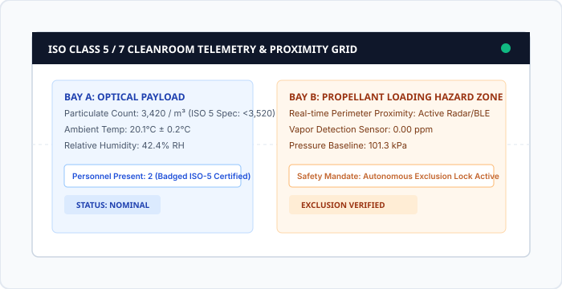

Aerospace & Space Flight Manufacturing Solutions
Turnkey operational intelligence engineered for the rigorous demands of commercial airframe production, satellite constellations, and orbital launch complexes.
Whether tracking high-value titanium wing spars across final assembly lines, ensuring particulate compliance during optical payload mating, or managing GSE readiness at the launch pad, AeroMFG AI scales seamlessly.

Enterprise Solution Frameworks
Four specialized operational frameworks engineered for tier-1 aerospace defense contractors.
Commercial Aircraft Final Assembly Lines (FAL)
Eliminates line stops, out-of-sequence work, and tool misplacement across multi-station commercial jet manufacturing hangars.
- Active 3D locating of major structural subassemblies (wings, nacelles, empennage).
- Automated step-by-step digital traveler validation linked to technician credentials.
- Real-time bottleneck alerts when station cycle time exceeds takttime thresholds.
Satellite AI&T (Assembly, Integration & Test)
Ensures total traceability and environmental safety for high-value spacecraft payloads, solar array deployment mechanisms, and optical sensors.
- Continuous ESD (electrostatic discharge) and outgassing monitoring.
- Torque telemetry logging on every precision fastener prior to thermal vacuum testing.
- Chain-of-custody logging between cleanrooms, vibration tables, and anechoic chambers.
Launch Pad GSE & Ground Logistics
Real-time asset management and hazard safety across multi-acre launch complexes, cryogenic umbilicals, and mobile launcher platforms.
- Automated exclusion zone verification during toxic/cryogenic propellant loading.
- Location and maintenance state tracking for Ground Support Equipment (GSE).
- Emergency personnel muster accountability during red-line launch pad alerts.
ISO Cleanroom Environmental Traceability
Automates compliance logging, gowning validation, and airlock pressure interlock telemetry to preserve ISO Class 5 and Class 7 environments.
- Automated particle concentration alerts prior to out-of-spec excursions.
- Badge credential checks preventing unauthorized access to sterile flight hardware.
- Immutable audit logs formatted directly for FAA and NASA quality audits.